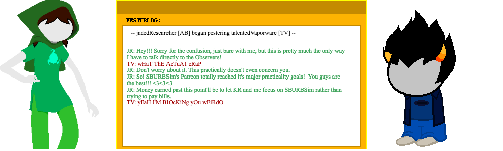

Support SBURBSim!!!
So: now that SBURBSim has done a sick backflip out of the nest and left purplefrog.com, we have actual server costs. Not a whole lot, but they are a thing that is both true and ongoing. SBURBSim'll pretty much always be free AND ad free, so donations are basically how the server (And dear sweet precious AuthorBot) is gonna keep going.
We have a patreon, where people can donate monthly. Even a dollar a month is a pretty useful thing for us.
We also have a paypal link, where people can donate a one time amount of their choosing.
And, the BIGGEST way anybody can give us support is by, well, supporting us! Let us know what you like, and don't like! Submit bug reports! Send us your ideas! And, most importantly: talk about us! Tell your friends! One day I shall be the most narratively significant Waste outside of Hussie himself! *maniacal laughter*